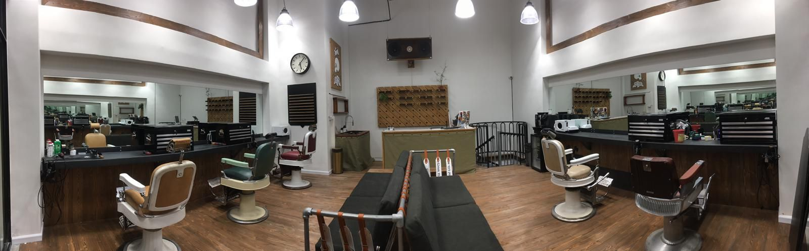
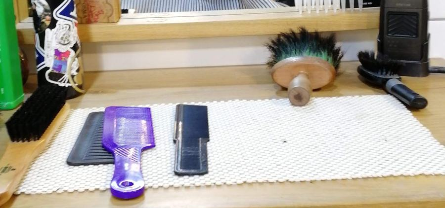
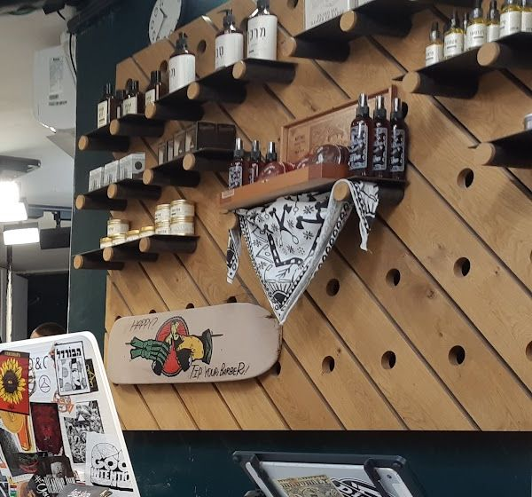
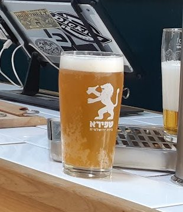
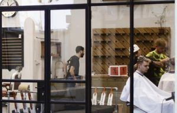
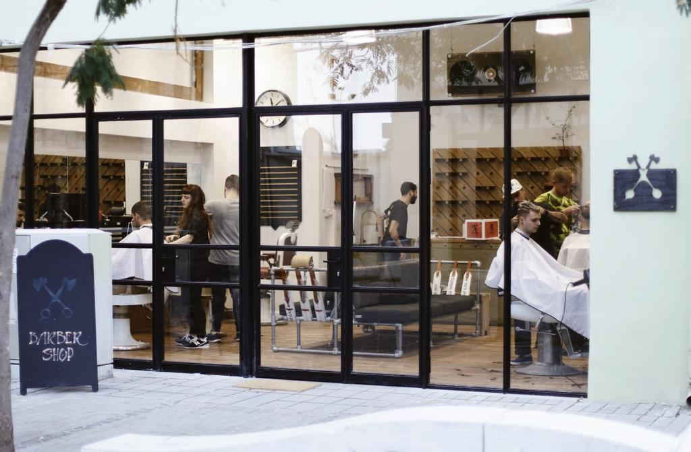
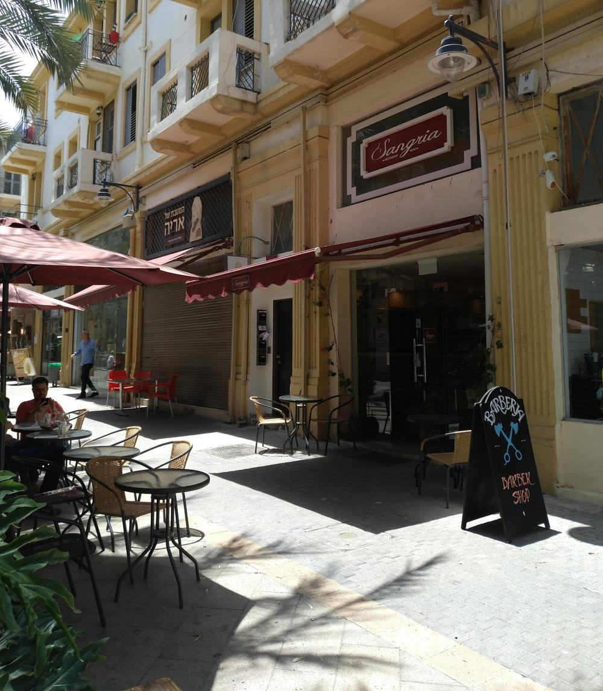
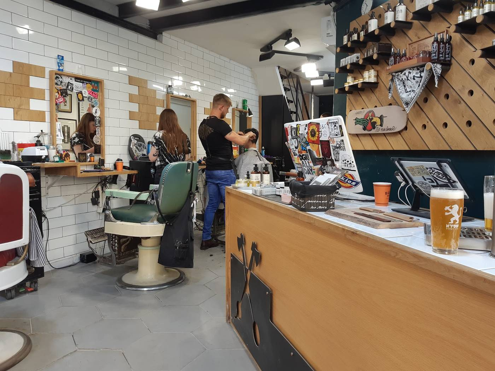

כמה כיסאות, כמה ספרים.Several chairs, several barbers.
כיסאות ספר וינטג׳ ממתכת ועור, ספרים שעובדים במקביל, וכמעט בלי לחכות מעבר לשעה שנקבעה.Vintage enamel-and-leather barber chairs, barbers working side by side, and almost no waiting past your time.

מה קורה בכיסא.What happens in the chair.
מהמכונה ועד התער, עם הקפדה על הפרטים.From the clipper to the razor, with care for the details.
-

תספורתThe cut
מכונה, מספריים, וקו נקי בסוף.Clipper, scissors, and a clean line to finish.
-
גילוח תערRazor shave
עם מגבות חמות על הפנים, כמו של פעם.With hot towels on the face, the old way.
-

מוצרי טיפוחGrooming
קיר שלם של מוצרים, על מדפי עץ.A whole wall of products on wooden pegs.
-

בירה קרהCold beer
כוס קרה על הבר. כן, במספרה.A cold glass at the bar. Yes, at the barber’s.
הנמל 
3, בעיר התחתית.3 HaNamal St, downtown.
חלון ראווה גדול, שלט גיר על המדרכה, ובתי אבן ישנים מסביב, צעדים מהנמל.A big shop window, a chalk sign on the pavement and old stone houses all round, steps from the port.


4.7 בגוגל, מ-472 ביקורות.4.7 on Google, from 472 reviews.

״מספרת גברים ברמה מאוד גבוהה. יש במקום גם גילוח תער (כמו של פעם כולל מגבות חמות על הפנים) מוצרי טיפוח ובירה קרה!״“A men’s barbershop of a very high standard. They also do razor shaves (the old way, with hot towels on the face), grooming products and cold beer!”
״המקום מעוצב בצורה נעימה ומזמינה עם מספר כיסאות וספרים שעובדים במקביל. שומרים בצורה יפה על התור ואין כמעט צורך להמתין מעבר לשעה שנקבעה. התספורת עצמה ברמה גבוהה ונראה שמקפידים על הפרטים.״“The place is designed in a pleasant, inviting way, with several chairs and barbers working side by side. They keep to your appointment nicely and there’s almost no need to wait past the set time. The haircut itself is of a high standard, and they clearly care about the details.”
כתבו לנו על הלוח.Write it on the board.
בוחרים מה ומתי, וההודעה יוצאת לוואטסאפ של המספרה.Pick what and when, and the message goes to the shop’s WhatsApp.
כשהעמוד מסתובב, פתוח.When the pole turns, we’re open.
הנמל 3, חיפה3 HaNamal St, Haifa · 050-774-4286